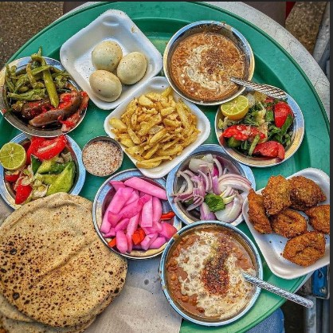

Egyptian food is truly a voyage through history, geography, and culture. Imagine walking through a bustling Cairo market, where the scents of spices, grilling meats, and fresh bread fill the air. The culinary journey starts with koshari, a beloved street food that combines lentils, rice, pasta, and chickpeas, topped with a zesty tomato sauce and crispy fried onions. Each mouthful is a blend of textures and flavors, a hearty testament to the resourcefulness of Egyptian cuisine.Then there's molokhia, a dish made from finely chopped jute leaves cooked with garlic and coriander. Often served with rice or bread, its unique, herbaceous taste has been a favorite in Egyptian households for generations. Pair it with a piece of marinated, slow-cooked rabbit or chicken, and you’ve got a meal that’s both nourishing and steeped in tradition.
Ful medames, another cornerstone of Egyptian cuisine, features fava beans slow-cooked with spices, garlic, and lemon juice, served with a drizzle of olive oil. This ancient dish, often enjoyed for breakfast, is best complemented by warm, freshly baked baladi bread, which adds a satisfying crunch and rustic flavor. Of course, no Egyptian feast is complete without dessert. Picture a plate of basbousa, a semolina cake soaked in sweet syrup and topped with almonds or coconut. Each bite is a delightful balance of sweetness and texture, a perfect ending to a rich meal.
And let’s talk about mezze—small plates perfect for sharing. Think creamy tahini, smoky baba ghanoush, and tangy pickles, all served with that incredible baladi bread. Or how about some stuffed grape leaves (wara enab) filled with a fragrant mixture of rice, herbs, and sometimes minced meat? Every dish tells a story of Egypt’s rich history and the people who’ve cultivated these recipes over centuries. It’s a cuisine that’s both humble and decadent, simple yet profound, and always incredibly delicious. Ready for a taste adventure? 🍽️
